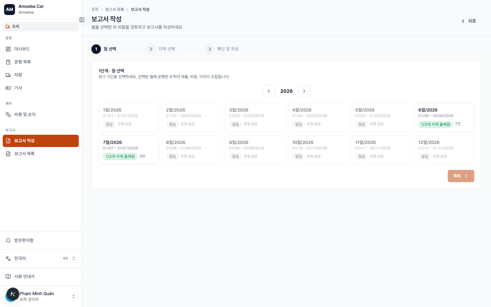
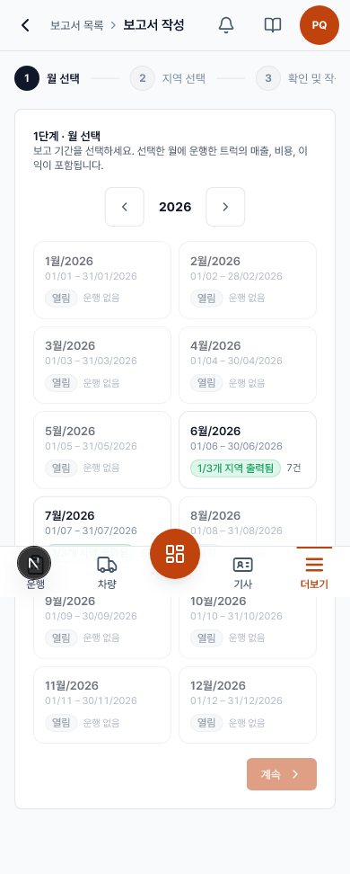
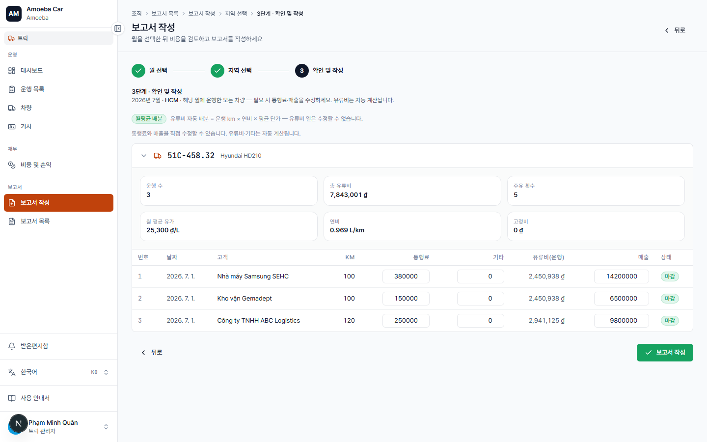
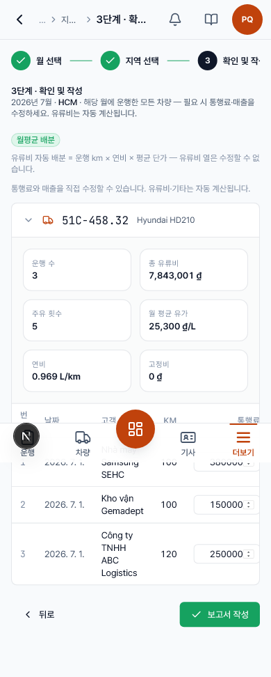

보고서 작성
- URL
/truck/reports/new- 절차
- 3단계: 월 → 지역 → 확인


사용 단계
- 1단계 — 월 선택: 보고할 월 선택.
- 2단계 — 지역 선택: 한 지역(HCM/동나이/Baiksan) 또는 전체 지역.
- 3단계 — 확인 & 작성: 집계 수치와 배분 배지를 확인한 후 생성.
- 생성된 보고서 Excel 다운로드(또는 보고서 목록에서).


3단계 — 연료비 배분
- 평균 배분 배지(초록) = 이 지역의 주유 영수증·운행 km 데이터가 충분함 — 연료비 열이 잠기고 연비 기준으로 자동 계산.
- 수동 임시 집계 배지(노랑) = 데이터 부족 — 연료비 열을 직접 수정 가능; 작성 전 손익 개요에서 영수증을 보충하는 것을 권장.
- 주행거리(km) 미입력 운행이 있으면 경고 표시 — 해당 운행의 배분 연료비는 0으로 처리.
- 표에서 통행료와 매출은 생성 전 직접 수정 가능.
로직 / 규칙(오류 차단)
- 데이터 없는 월 → 2단계로 진행 불가, 1단계에서 즉시 경고.
- 해당 월에 운행 없는 지역 → 3단계로 진행 불가, 2단계에서 즉시 경고.
- 여러 번 재작성해도 안전 — 생성할 때마다 최신 데이터로 다시 계산해 공식 수치를 덮어씁니다; 이전 보고서는 보고서 목록에 그대로 남아 대조 가능.
- 보고서는 지역명과 함께 명명되어 목록에 저장.